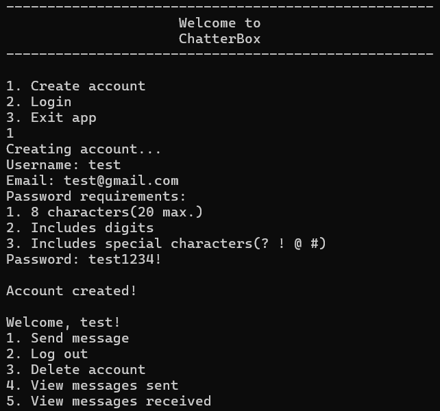
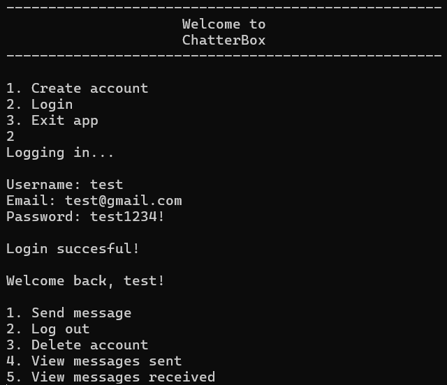
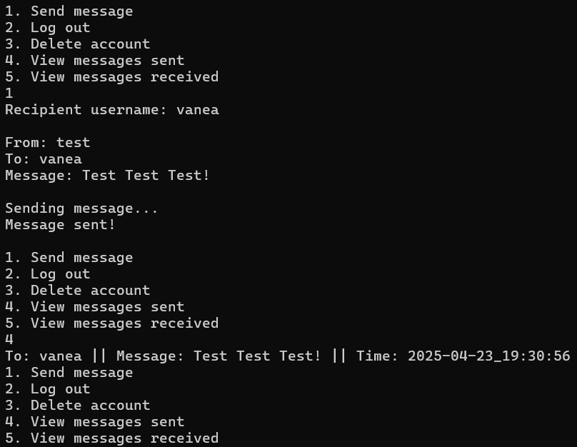
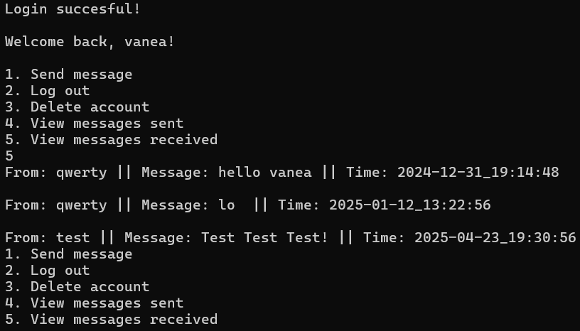

About Me
Hey! I'm Octavio. I really enjoy building websites and writing code. It's something I've loved doing for a long time, and I'm always excited to learn new things and improve my skills. Whether it's trying out a new programming language or working on a fun project, coding always keeps me interested.
I speak English, Romanian, and Spanish, which helps me connect with people from different places. In my free time, I like playing chess, reading books, and of course, I love gaming.
One more thing about me: I really love cats! They're funny, curious, and always find a way to make me smile.
Projects
→ Coffee Menu
Project Info
This page is a coffee menu for a fictional coffee shop. It was built using only HTML and CSS. The images are AI generated.
View it here
→ Landing Page
Project Info
This page is a landing page for a fictional company that lets people adopt silly cats. It was built using only HTML and CSS. Beware, the page contains dangerous levels of silliness!
View it here
→ Etch A Sketch
Project Info
This page resembles an Etch A Sketch. When you drag the mouse over the black box, the mouse leaves a colorful trail. For every square that the mouse leaves, it generates a random color. It was built using HTML, CSS and mainly JavaScript.
View it here
→ C++ Console App
Project Info
ChatterBox is a C++ Console App. It has a Sign up/Login system and a messaging system that lets you message other users. It also has a storage system where it stores every account and messages that were sent, so even if you close the app after signing up, you can login back into your account, continue talking to your friends and still see the messages you sent and received.
ChatterBox ensures you have a valid username, email and password. After the account is created, the app stores the account information into the storage and you can close the app and then login into that same account!
When you login, the app makes sure that the name, email and password are correct. After you succesfully log in, the app loads the messages you sent and the messages you received.
When you send a message, the app checks if the users exists. If it does, you can send a message. After that, you can see the messages you sent along with a time stamp and to who that message was sent.
You can also check the messages you received along with a time stamp and who sent you that message.
Skills